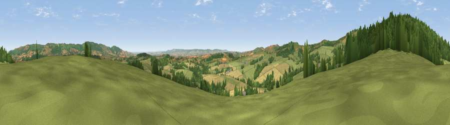

Viewpoint near Brompton Ralph
#11035 in England · top 26% of its area beats it · near Brompton RalphWhere it is
The exact computed spot (ST 10025 32875). Click the marker for map links.
The view, rendered

A 360° render of this exact spot computed from the terrain model, tree cover and land cover — summer colours, afternoon light, calibrated against photographs of famous viewpoints. Real trees, hedges and buildings will differ in detail.
The panorama
Grey silhouette: terrain skyline in each direction (720 bearings, Earth curvature and refraction included). Dashed green: skyline with trees (+15 m) and buildings (+8 m) as obstacles. Blue strip: how far the ground is visible on each bearing.
Where the view opens
Wedge length = distance to the farthest visible ground on that bearing (vegetation-aware). Rings at 10, 25 and 50 km.
What fills the view
53% grassland · 30% woodland · 17% cropland
Angular shares of the visible panorama (visual magnitude), not map area. Landscape diversity 0.45 (0–1 Shannon).
Key numbers
More beautiful places nearby
The staircase of upgrades: each row has a higher view potential than everything closer. Driving times are estimates from straight-line distance, calibrated against real road routing — check an actual route before setting out.
| Place | Direction | Drive | Score |
|---|---|---|---|
| Willett Hill | NW · 1 km | ~2 min | 74.4 |
| Viewpoint near Elworthy | WNW · 3 km | ~7 min | 75.6 |
| Viewpoint near Elworthy | NW · 4 km | ~9 min | 79.2 |
| Viewpoint near West Bagborough | ENE · 7 km | ~14 min | 84.6 |
| Wills Neck | ENE · 7 km | ~14 min | 85.7 |
| Viewpoint near West Quantoxhead | NNE · 8 km | ~17 min | 87.8 |
| Viewpoint near West Quantoxhead | NNE · 9 km | ~18 min | 88.7 |
| Holdstone Hill | WNW · 50 km | ~71 min | 90.2 |
51.08811, -3.28605 · source: screening · position refined by local search. Computed location — check access rights before visiting.